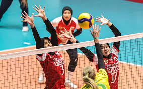
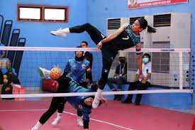
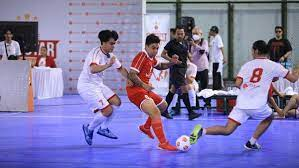
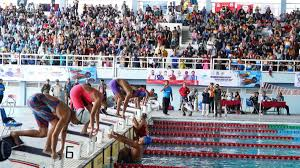

Kesempatan untuk Mengembangkan Minat dan Bakat Kalian!
Bergabunglah dengan Ekskul Kami Sekarang.
| No. | Nama Ekstrakurikuler | Rincian Ekstrakurikuler | Gambar Ekstrakurikuler |
|---|---|---|---|
| 1 | Volly Ball | Bola voli merupakan permainan beregu yang bertujuan untuk memukul bola ke arah bidang lapangan lawan untuk mendapatkan poin. |  |
| 2 | English Club | English Club adalah sebuah wadah bagi peserta didik dalam menyalurkan minat dan bakat serta pengetahuan di bidang Bahasa Inggris. |  |
| 3 | Takraw | Sepak takraw adalah jenis olahraga campuran dari sepak bola dan bola voli, dimainkan di lapangan ganda bulu tangkis, dan pemain tidak boleh menyentuh bola dengan tangan. |  |
| 4 | Futsal | Futsal adalah permainan bola yang dimainkan oleh dua tim, yang masing-masing beranggotakan lima orang. |  |
| 5 | Akuatik | akuatik merupakan sebuah aktivitas dengan menggunakan media air. |  |